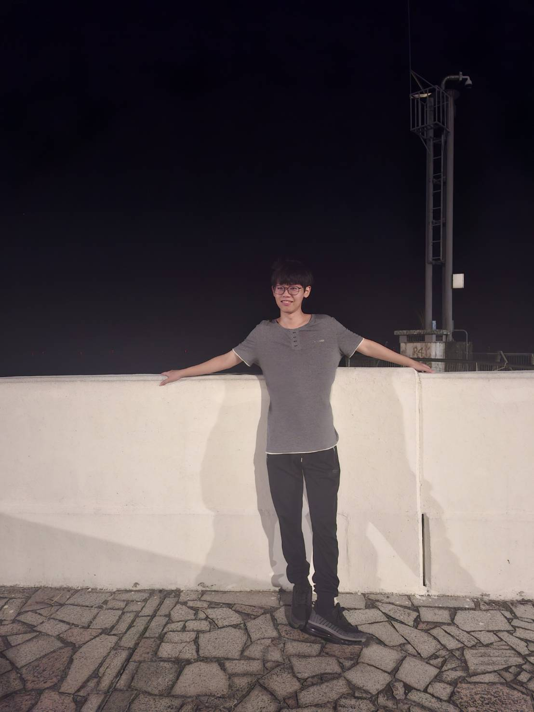

Hi ! 我是陳國翔 :D
奈何程式如山
題目千萬行，我只會千行
時間軸
2020
2021
2022
2023
2024
2025
2026
- C 語言基礎學習：深入理解程式設計的核心概念與基本語法。
- 學習 C++、C# 程式語言，從基礎語法到物件導向程式設計。
- 參加各種程式考試：APCS、ITSA。
- 開始 LeetCode 刷題，培養解題思維。
- 考取電腦軟體設計證照，驗證程式開發技能與理論知識。
- 參加技藝競賽，累積實戰經驗。
- 建立我的 GitHub 帳號。
- 確立未來學習方向，決心深入資訊工程領域。
- 我高中的學習歷程。
- 甄選正取上台中科大資工。
- 重新接觸程式設計，學習 Python 與 Java，完成基礎專案。
- 英文分班到 A 組，但校內多益模考沒達標，必修差點被當掉。
- 嘗試撰寫 C# MonoGame 小型 2D 遊戲與 JavaScript 的外掛腳本，提升實作能力。
- 前端技術：深入掌握 HTML5、CSS3 與 JavaScript，熟悉 DOM 操作、事件驅動與響應式佈局。
- 資料庫基礎：了解關聯式資料庫概念，使用 Microsoft SQL Server 連接 C# 應用程式。
- 專業證照與能力檢定：參加大學程式能力考試，通過資訊領域專業證照。
- Django 後端開發：使用 Django 框架編寫 REST ful API，結合 PostgreSQL，並部署至雲端（render），設定自動化測試與 CI/CD。
- 開始使用 Flutter 進行跨平台軟體開發，規劃並實作手機端專案。
- 能使用 Git 團隊協作開發，熟悉 Issue 分工、Branch Flow 與 Pull Request 溝通流程。
- 參與小組報告與專案分工，開始畢業專題的規劃與實作。
- 2026 後半年待續。